江山北望图片资产
当前客户端 2.0.4。点击图片打开原文件；文件名与包内目录保留。
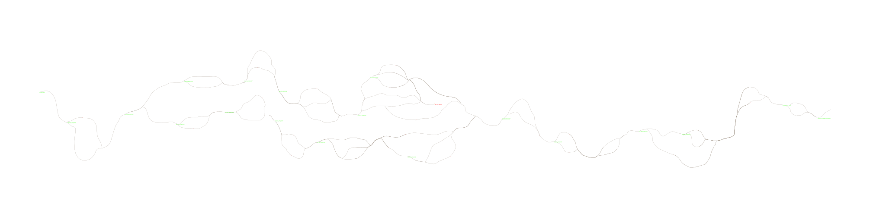
02-界面与章节图/app/renderer/main_window/assets/0-BZ3A8zb8.svg02-界面与章节图/app/renderer/main_window/assets/0-CEM8arE3.jpg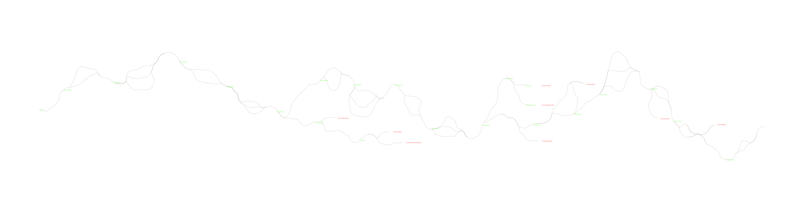
02-界面与章节图/app/renderer/main_window/assets/1-C2RGVoPy.svg02-界面与章节图/app/renderer/main_window/assets/1-CI4KGX4J.jpg02-界面与章节图/app/renderer/main_window/assets/2-FYkbUHI0.jpg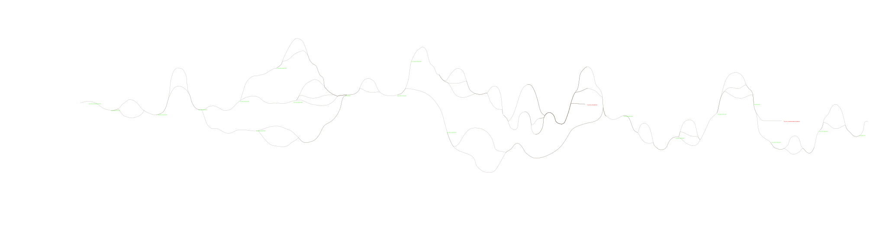
02-界面与章节图/app/renderer/main_window/assets/2-me1vNRp0.svg02-界面与章节图/app/renderer/main_window/assets/3-CCcnffp3.jpg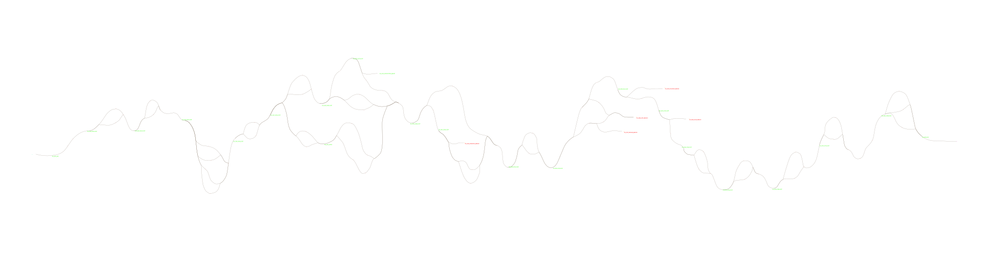
02-界面与章节图/app/renderer/main_window/assets/3-Cj2tqi2W.svg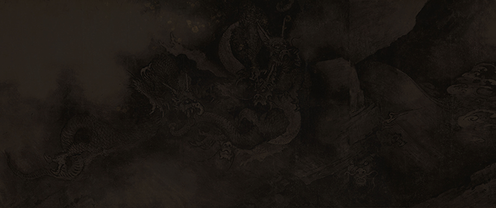
02-界面与章节图/app/renderer/main_window/assets/4-B0X82W_m.jpg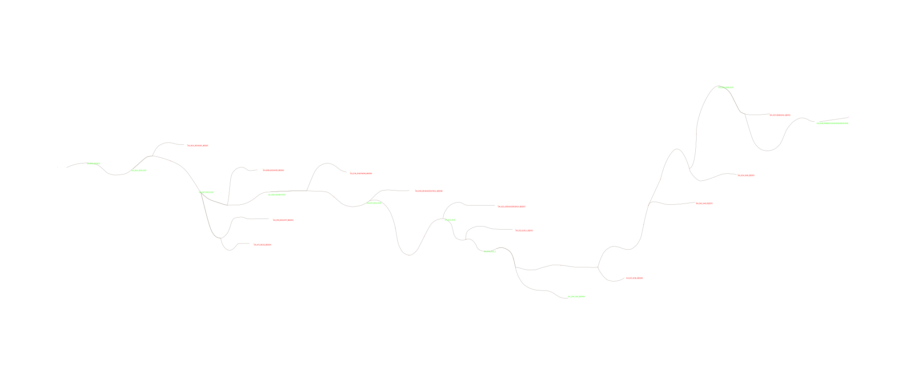
02-界面与章节图/app/renderer/main_window/assets/4-y0lvZXWn.svg02-界面与章节图/app/renderer/main_window/assets/5-B4nNNWVQ.jpg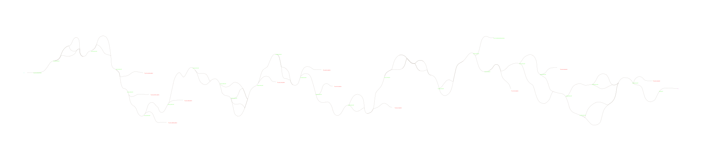
02-界面与章节图/app/renderer/main_window/assets/5-DCCQnmhR.svg02-界面与章节图/app/renderer/main_window/assets/6-CPlsjnh-.jpg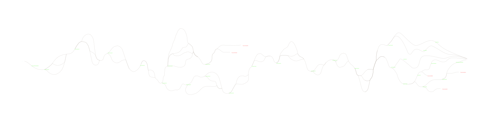
02-界面与章节图/app/renderer/main_window/assets/6-DTbIrXqH.svg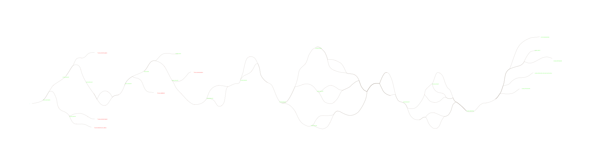
02-界面与章节图/app/renderer/main_window/assets/7-5_j-nu5T.svg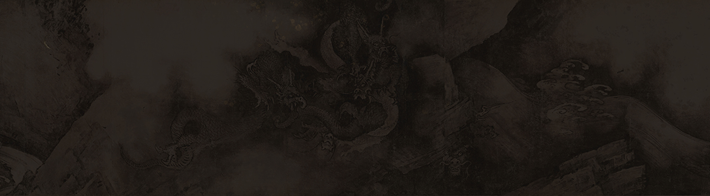
02-界面与章节图/app/renderer/main_window/assets/7-DTtA-VA5.jpg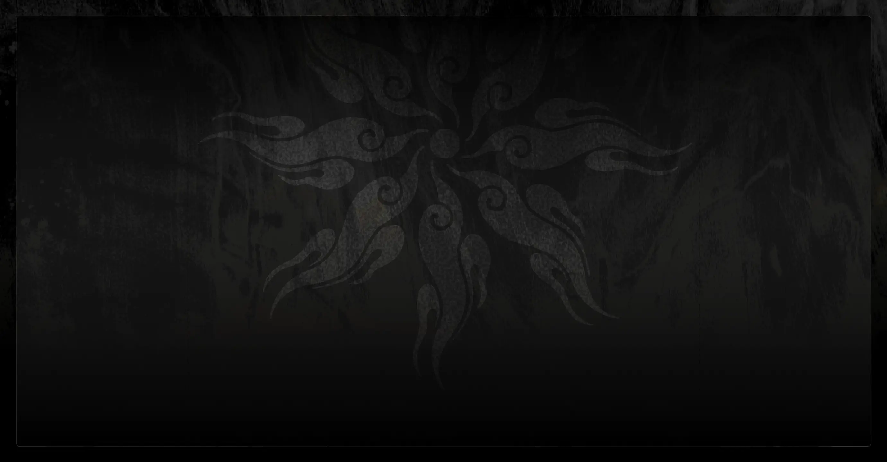
02-界面与章节图/app/renderer/main_window/assets/Frame92-BNC_mssk.webp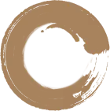
02-界面与章节图/app/renderer/main_window/assets/UI_Loading-BNacLxwL.webp02-界面与章节图/app/renderer/main_window/assets/background-BaH7ATpA.webp02-界面与章节图/app/renderer/main_window/assets/background-DoilCBPF.webp02-界面与章节图/app/renderer/main_window/assets/btn_shine-FbMXJMPU.webp02-界面与章节图/app/renderer/main_window/assets/color_bar_1-7vm64O7A.webp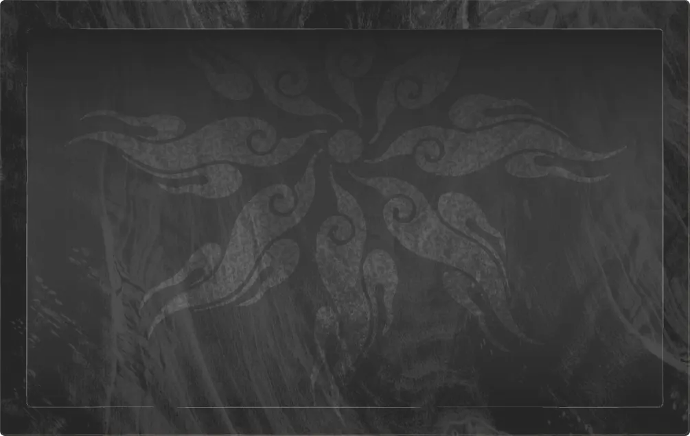
02-界面与章节图/app/renderer/main_window/assets/esc背景-B4-8CDee.webp02-界面与章节图/app/renderer/main_window/assets/ios-background-C939cRtR.png02-界面与章节图/app/renderer/main_window/assets/ios-buy-CickASV_.png02-界面与章节图/app/renderer/main_window/assets/loading-Cv7e8uIL.webp02-界面与章节图/app/renderer/main_window/assets/loop_button_l_default-CTVKWrfQ.webp02-界面与章节图/app/renderer/main_window/assets/loop_button_l_highlighted-pJT8aTOt.webp02-界面与章节图/app/renderer/main_window/assets/loop_button_r_default-B6bd4ztV.webp02-界面与章节图/app/renderer/main_window/assets/loop_button_r_highlighted-C1CvELE7.webp02-界面与章节图/app/renderer/main_window/assets/main_btn_background-DrunqumV.png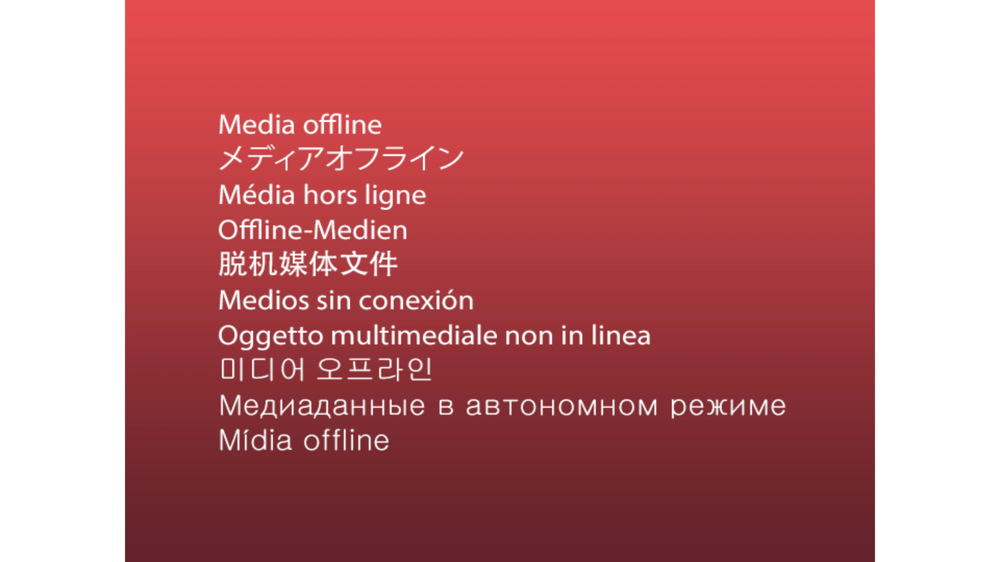
02-界面与章节图/app/renderer/main_window/assets/media_offline-jUG_KGaB.webp02-界面与章节图/app/renderer/main_window/assets/qte_slide_arrow-Dqq94AdA.png02-界面与章节图/app/renderer/main_window/assets/qte_slide_tail-D7WDwnnk.png02-界面与章节图/app/renderer/main_window/assets/七-DflJaBwE.svg02-界面与章节图/app/renderer/main_window/assets/三-7SYiHWYr.svg02-界面与章节图/app/renderer/main_window/assets/二-xegyaOn7.svg02-界面与章节图/app/renderer/main_window/assets/五-BHOpum8S.svg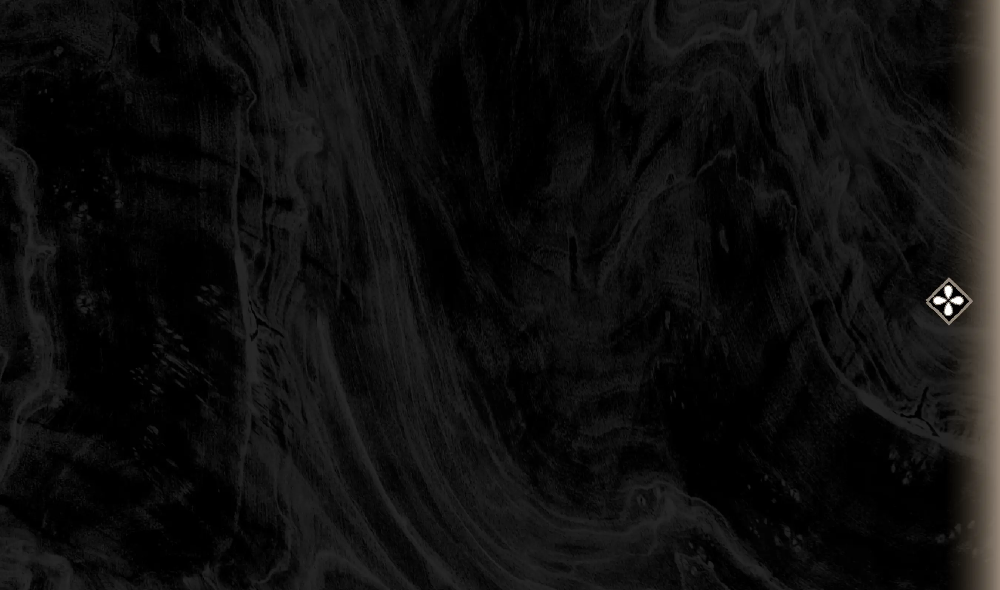
02-界面与章节图/app/renderer/main_window/assets/人物介绍底图-CQhUZWXH.webp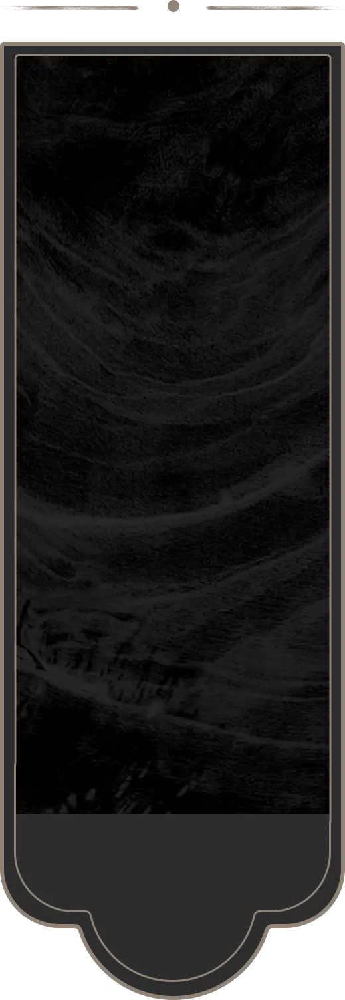
02-界面与章节图/app/renderer/main_window/assets/人物列表底图-ZyfqSuuh.webp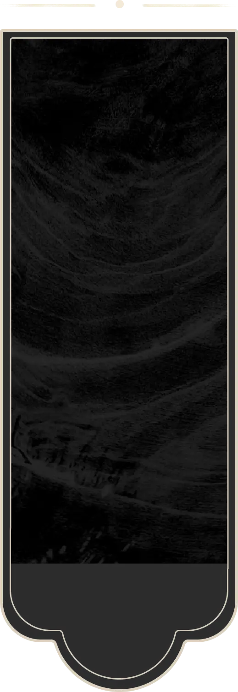
02-界面与章节图/app/renderer/main_window/assets/人物列表底图高亮-D8mu28O-.webp02-界面与章节图/app/renderer/main_window/assets/六-DceUZwCK.svg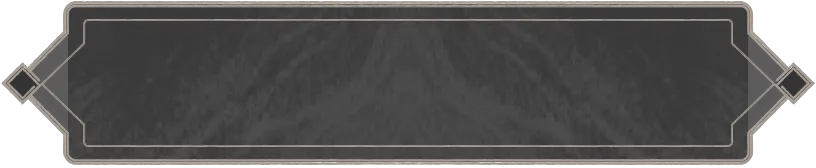
02-界面与章节图/app/renderer/main_window/assets/单选框-CEoP21zG.webp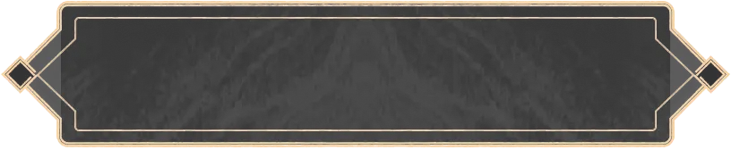
02-界面与章节图/app/renderer/main_window/assets/单选框高亮-CTUF9S1n.webp02-界面与章节图/app/renderer/main_window/assets/四-DIFurY9u.svg02-界面与章节图/app/renderer/main_window/assets/圆点一-BTX0VGmL.webp02-界面与章节图/app/renderer/main_window/assets/圆点序-B6ZvwSOc.webp02-界面与章节图/app/renderer/main_window/assets/圆点高亮-BBIuafX1.webp02-界面与章节图/app/renderer/main_window/assets/弹窗图标-DVDiU4hV.webp02-界面与章节图/app/renderer/main_window/assets/弹窗顶部装饰-e82BmpLT.webp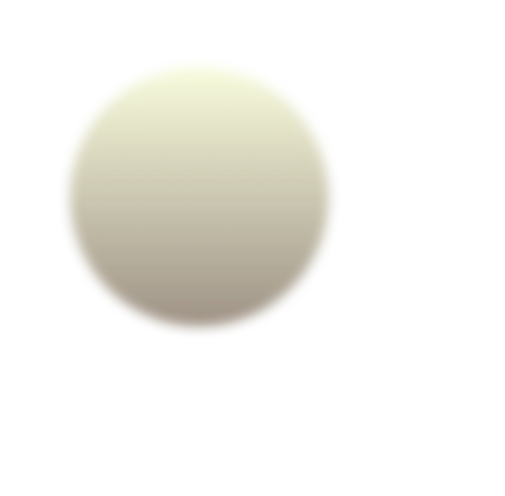
02-界面与章节图/app/renderer/main_window/assets/月亮底纹-BDzmzOvp.webp02-界面与章节图/app/renderer/main_window/assets/点-D4Z2mVCy.svg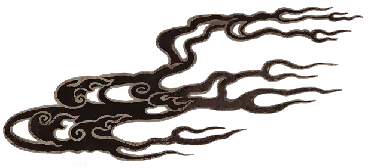
02-界面与章节图/app/renderer/main_window/assets/祥云-CdsvXEc0.webp02-界面与章节图/app/renderer/main_window/assets/章节按钮高亮-DMP5WUdu.webp02-界面与章节图/app/renderer/main_window/assets/章节跳转-CnplLAXm.webp02-界面与章节图/app/renderer/main_window/assets/章节跳转高亮-C4aFIkT2.webp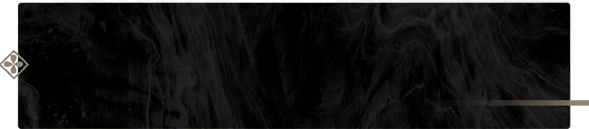
02-界面与章节图/app/renderer/main_window/assets/章节页面介绍框-DvEV-4js.webp02-界面与章节图/app/renderer/main_window/assets/角标-BXwCAxQM.svg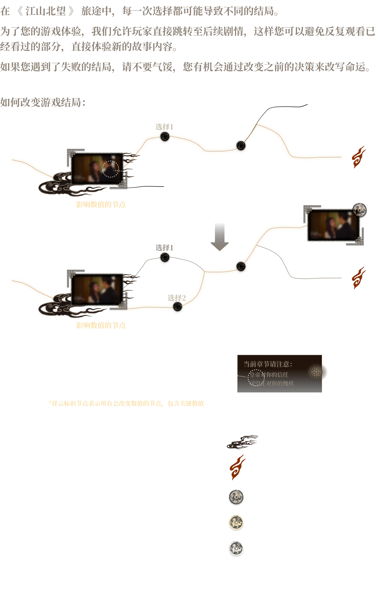
02-界面与章节图/app/renderer/main_window/assets/说明页面-BOVzz24f.webp02-界面与章节图/app/renderer/main_window/assets/进度条-BIhCdlL3.webp02-界面与章节图/app/renderer/main_window/assets/进度条-Dptf1cP0.webp02-界面与章节图/app/renderer/main_window/assets/进度条1-CHUQguVZ.webp02-界面与章节图/app/renderer/main_window/assets/进度条2-DM4gEHU6.webp02-界面与章节图/app/renderer/main_window/assets/进度条底色-Bo7HjUnd.webp02-界面与章节图/app/renderer/main_window/assets/进度条底色-DU6ZDwJf.webp02-界面与章节图/app/renderer/main_window/assets/金色-Jj2Umjps.webp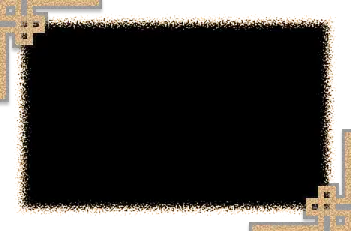
02-界面与章节图/app/renderer/main_window/assets/金色框-DA6AuOVH.webp02-界面与章节图/app/renderer/main_window/assets/银色-D3xylvFS.webp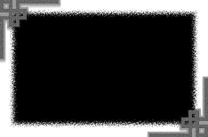
02-界面与章节图/app/renderer/main_window/assets/银色框-CO-gsDbj.webp02-界面与章节图/app/renderer/main_window/assets/音量条-DzVLHm0u.webp02-界面与章节图/app/renderer/main_window/assets/音量条底色-DaK1-ujr.webp02-界面与章节图/app/renderer/main_window/favicon.png03-章节缩略图与图片/chapter0_neutral/images/上.webp03-章节缩略图与图片/chapter0_neutral/images/下.webp03-章节缩略图与图片/chapter0_neutral/images/完.webp03-章节缩略图与图片/chapter0_neutral/node_thumbnails/a00_a001_a001.webp03-章节缩略图与图片/chapter0_neutral/node_thumbnails/a00_a002_a001loop.webp03-章节缩略图与图片/chapter0_neutral/node_thumbnails/a00_a006_a002loop.webp03-章节缩略图与图片/chapter0_neutral/node_thumbnails/a00_a010_a003loop.webp03-章节缩略图与图片/chapter0_neutral/node_thumbnails/a00_a014_a004loop.webp03-章节缩略图与图片/chapter0_neutral/node_thumbnails/a00_a018_a005loop.webp03-章节缩略图与图片/chapter0_neutral/node_thumbnails/a00_a023_a006loop.webp03-章节缩略图与图片/chapter0_neutral/node_thumbnails/a00_a030_a007loop.webp03-章节缩略图与图片/chapter0_neutral/node_thumbnails/a00_a037_a008loop.webp03-章节缩略图与图片/chapter0_neutral/node_thumbnails/a00_a041_a009loop.webp03-章节缩略图与图片/chapter0_neutral/node_thumbnails/a00_a044_a010loop.webp03-章节缩略图与图片/chapter0_neutral/node_thumbnails/a00_a047_a011loop.webp03-章节缩略图与图片/chapter0_neutral/node_thumbnails/a00_a054_a012loop.webp03-章节缩略图与图片/chapter0_neutral/node_thumbnails/a00_a058_a013loop.webp03-章节缩略图与图片/chapter0_neutral/node_thumbnails/a00_a062_a014loop.webp03-章节缩略图与图片/chapter0_neutral/node_thumbnails/a00_a068_a015loop.webp03-章节缩略图与图片/chapter0_neutral/node_thumbnails/a00_a072_a016loop.webp03-章节缩略图与图片/chapter0_neutral/node_thumbnails/a00_a078_a017loop.webp03-章节缩略图与图片/chapter0_neutral/node_thumbnails/a00_a081_a037038039040041.webp03-章节缩略图与图片/chapter1_neutral/images/上.webp03-章节缩略图与图片/chapter1_neutral/images/下.webp03-章节缩略图与图片/chapter1_neutral/images/完.webp03-章节缩略图与图片/chapter1_neutral/node_thumbnails/a01_a001_a001.webp03-章节缩略图与图片/chapter1_neutral/node_thumbnails/a01_a002_a001loop.webp03-章节缩略图与图片/chapter1_neutral/node_thumbnails/a01_a006_a002loop.webp03-章节缩略图与图片/chapter1_neutral/node_thumbnails/a01_a011_a003loop.webp03-章节缩略图与图片/chapter1_neutral/node_thumbnails/a01_a014_a004loop.webp03-章节缩略图与图片/chapter1_neutral/node_thumbnails/a01_a019_a005loop.webp03-章节缩略图与图片/chapter1_neutral/node_thumbnails/a01_a023_a006loop.webp03-章节缩略图与图片/chapter1_neutral/node_thumbnails/a01_a027_a007loop.webp03-章节缩略图与图片/chapter1_neutral/node_thumbnails/a01_a031_a028.webp03-章节缩略图与图片/chapter1_neutral/node_thumbnails/a01_a032_a032033034035036_ahe001.webp03-章节缩略图与图片/chapter1_neutral/node_thumbnails/a01_a034_a008loop.webp03-章节缩略图与图片/chapter1_neutral/node_thumbnails/a01_a039_a009loop.webp03-章节缩略图与图片/chapter1_neutral/node_thumbnails/a01_a043_a010loop.webp03-章节缩略图与图片/chapter1_neutral/node_thumbnails/a01_a048_a011loop.webp03-章节缩略图与图片/chapter1_neutral/node_thumbnails/a01_a052_a012loop.webp03-章节缩略图与图片/chapter1_neutral/node_thumbnails/a01_a053_a012a.webp03-章节缩略图与图片/chapter1_neutral/node_thumbnails/a01_a054_a012b053054.webp03-章节缩略图与图片/chapter1_neutral/node_thumbnails/a01_a055_a046055.webp03-章节缩略图与图片/chapter1_neutral/node_thumbnails/a01_a059_a013loop.webp03-章节缩略图与图片/chapter1_neutral/node_thumbnails/a01_a062_a014loop.webp03-章节缩略图与图片/chapter1_neutral/node_thumbnails/a01_a067_a015loop.webp03-章节缩略图与图片/chapter1_neutral/node_thumbnails/a01_a072_a016loop.webp03-章节缩略图与图片/chapter1_neutral/node_thumbnails/a01_a077_aqte2loop.webp03-章节缩略图与图片/chapter1_neutral/node_thumbnails/a01_a083_a069079.webp03-章节缩略图与图片/chapter2_neutral/images/上.webp03-章节缩略图与图片/chapter2_neutral/images/下.webp03-章节缩略图与图片/chapter2_neutral/images/完.webp03-章节缩略图与图片/chapter2_neutral/node_thumbnails/a02_a001_a001002003004.webp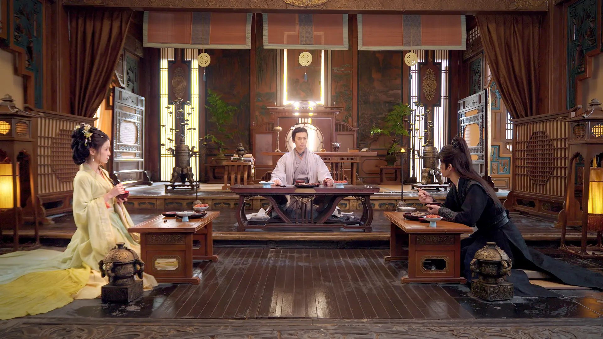
03-章节缩略图与图片/chapter2_neutral/node_thumbnails/a02_a002_a001loop.webp03-章节缩略图与图片/chapter2_neutral/node_thumbnails/a02_a006_a002loop.webp03-章节缩略图与图片/chapter2_neutral/node_thumbnails/a02_a009_a007008.webp03-章节缩略图与图片/chapter2_neutral/node_thumbnails/a02_a012_a003loop.webp03-章节缩略图与图片/chapter2_neutral/node_thumbnails/a02_a016_a004loop.webp03-章节缩略图与图片/chapter2_neutral/node_thumbnails/a02_a020_a005loop.webp03-章节缩略图与图片/chapter2_neutral/node_thumbnails/a02_a024_a006loop.webp03-章节缩略图与图片/chapter2_neutral/node_thumbnails/a02_a027_a017.webp03-章节缩略图与图片/chapter2_neutral/node_thumbnails/a02_a031_a007loop.webp03-章节缩略图与图片/chapter2_neutral/node_thumbnails/a02_a034_aqte1loop.webp03-章节缩略图与图片/chapter2_neutral/node_thumbnails/a02_a053_a008loop.webp03-章节缩略图与图片/chapter2_neutral/node_thumbnails/a02_a057_a009loop.webp03-章节缩略图与图片/chapter2_neutral/node_thumbnails/a02_a061_a010loop.webp03-章节缩略图与图片/chapter2_neutral/node_thumbnails/a02_a066_a011loop.webp03-章节缩略图与图片/chapter2_neutral/node_thumbnails/a02_a070_a043.webp03-章节缩略图与图片/chapter2_neutral/node_thumbnails/a02_a073_a012loop.webp03-章节缩略图与图片/chapter2_neutral/node_thumbnails/a02_a077_a013loop.webp03-章节缩略图与图片/chapter2_neutral/node_thumbnails/a02_a080_a051.webp03-章节缩略图与图片/chapter3_neutral/images/上.webp03-章节缩略图与图片/chapter3_neutral/images/下.webp03-章节缩略图与图片/chapter3_neutral/images/完.webp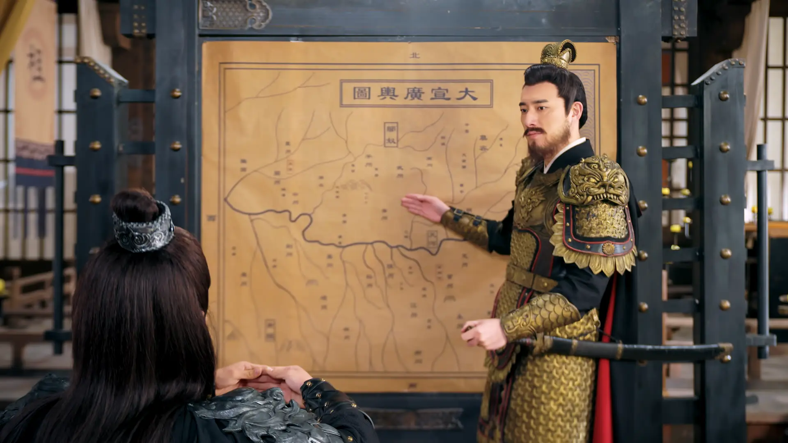
03-章节缩略图与图片/chapter3_neutral/node_thumbnails/a03_a001_a001.webp03-章节缩略图与图片/chapter3_neutral/node_thumbnails/a03_a004_a001loop.webp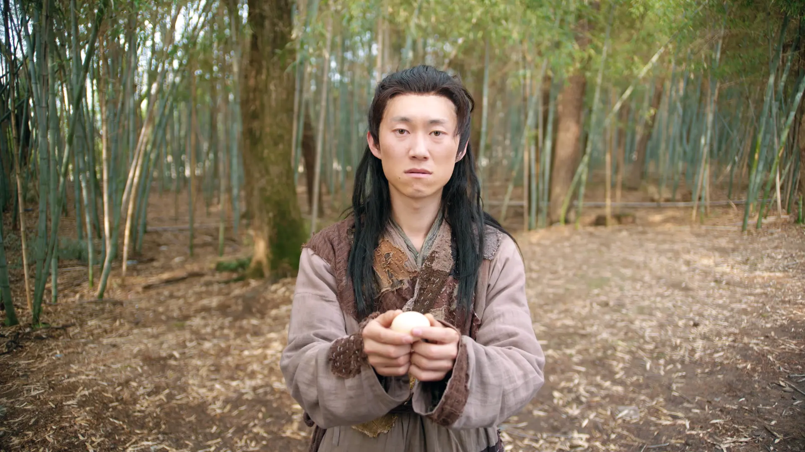
03-章节缩略图与图片/chapter3_neutral/node_thumbnails/a03_a008_a002loop.webp03-章节缩略图与图片/chapter3_neutral/node_thumbnails/a03_a012_a003loop.webp03-章节缩略图与图片/chapter3_neutral/node_thumbnails/a03_a018_a004loop.webp03-章节缩略图与图片/chapter3_neutral/node_thumbnails/a03_a021_a005loop.webp03-章节缩略图与图片/chapter3_neutral/node_thumbnails/a03_a024_aqte2.webp03-章节缩略图与图片/chapter3_neutral/node_thumbnails/a03_a028_a006loop.webp03-章节缩略图与图片/chapter3_neutral/node_thumbnails/a03_a032_a007loop.webp03-章节缩略图与图片/chapter3_neutral/node_thumbnails/a03_a042_a008loop.webp03-章节缩略图与图片/chapter3_neutral/node_thumbnails/a03_a045_a009loop.webp03-章节缩略图与图片/chapter3_neutral/node_thumbnails/a03_a046_a009a034_abe002.webp03-章节缩略图与图片/chapter3_neutral/node_thumbnails/a03_a049_a010loop.webp03-章节缩略图与图片/chapter3_neutral/node_thumbnails/a03_a052_a011loop.webp03-章节缩略图与图片/chapter3_neutral/node_thumbnails/a03_a059_a012loop.webp03-章节缩略图与图片/chapter3_neutral/node_thumbnails/a03_a063_a013loop.webp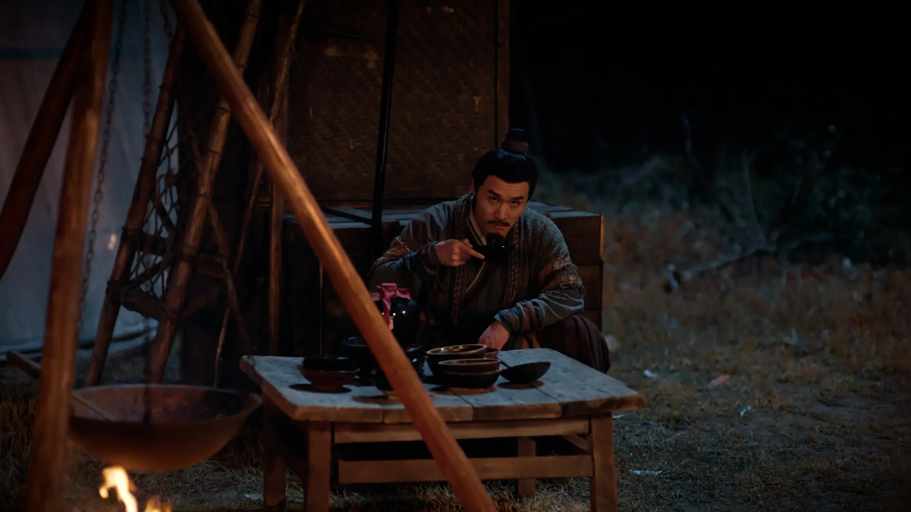
03-章节缩略图与图片/chapter3_neutral/node_thumbnails/a03_a066_a014loop.webp03-章节缩略图与图片/chapter3_neutral/node_thumbnails/a03_a070_a015loop.webp03-章节缩略图与图片/chapter3_neutral/node_thumbnails/a03_a074_a016loop.webp03-章节缩略图与图片/chapter3_neutral/node_thumbnails/a03_a078_a017loop.webp03-章节缩略图与图片/chapter3_neutral/node_thumbnails/a03_a083_a018loop.webp03-章节缩略图与图片/chapter3_neutral/node_thumbnails/a03_a087_a070.webp03-章节缩略图与图片/chapter3_neutral/node_thumbnails/a03_a088_a044_abe004.webp03-章节缩略图与图片/chapter4_neutral/images/上.webp03-章节缩略图与图片/chapter4_neutral/images/下.webp03-章节缩略图与图片/chapter4_neutral/images/完.webp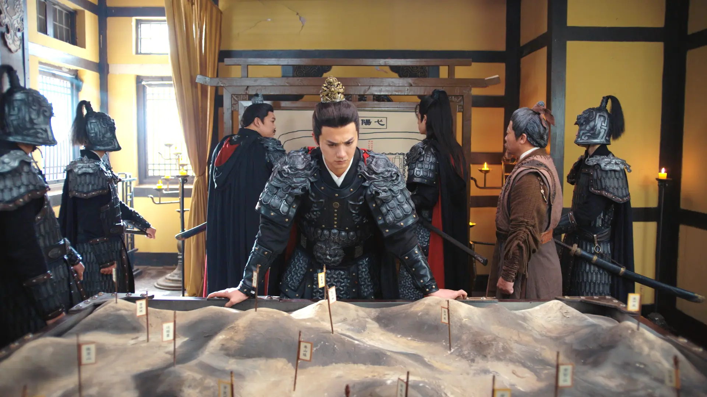
03-章节缩略图与图片/chapter4_neutral/node_thumbnails/a04_a001_a001002.webp03-章节缩略图与图片/chapter4_neutral/node_thumbnails/a04_a002_a001loop.webp03-章节缩略图与图片/chapter4_neutral/node_thumbnails/a04_a007_a002loop.webp03-章节缩略图与图片/chapter4_neutral/node_thumbnails/a04_a009_a002b012013.webp03-章节缩略图与图片/chapter4_neutral/node_thumbnails/a04_a013_a035_a2.webp03-章节缩略图与图片/chapter4_neutral/node_thumbnails/a04_a017_a003loop.webp03-章节缩略图与图片/chapter4_neutral/node_thumbnails/a04_a022_a005.webp03-章节缩略图与图片/chapter4_neutral/node_thumbnails/a04_a028_a036.webp03-章节缩略图与图片/chapter4_neutral/node_thumbnails/a04_a036_a006loop.webp03-章节缩略图与图片/chapter4_neutral/node_thumbnails/a04_a038_a006b043044045046047048.webp03-章节缩略图与图片/chapter4_neutral/node_thumbnails/a04_a043_a039_a1.webp03-章节缩略图与图片/chapter5_neutral/images/上.webp03-章节缩略图与图片/chapter5_neutral/images/下.webp03-章节缩略图与图片/chapter5_neutral/images/完.webp03-章节缩略图与图片/chapter5_neutral/node_thumbnails/a05_a001_a001002003004.webp03-章节缩略图与图片/chapter5_neutral/node_thumbnails/a05_a002_a001loop.webp03-章节缩略图与图片/chapter5_neutral/node_thumbnails/a05_a007_a002loop.webp03-章节缩略图与图片/chapter5_neutral/node_thumbnails/a05_a011_a003loop.webp03-章节缩略图与图片/chapter5_neutral/node_thumbnails/a05_a015_a004loop.webp03-章节缩略图与图片/chapter5_neutral/node_thumbnails/a05_a019_a022loop.webp03-章节缩略图与图片/chapter5_neutral/node_thumbnails/a05_a020_a005loop.webp03-章节缩略图与图片/chapter5_neutral/node_thumbnails/a05_a024_a006loop.webp03-章节缩略图与图片/chapter5_neutral/node_thumbnails/a05_a029_a007loop.webp03-章节缩略图与图片/chapter5_neutral/node_thumbnails/a05_a033_a008loop.webp03-章节缩略图与图片/chapter5_neutral/node_thumbnails/a05_a036_a009loop.webp03-章节缩略图与图片/chapter5_neutral/node_thumbnails/a05_a041_a010loop.webp03-章节缩略图与图片/chapter5_neutral/node_thumbnails/a05_a044_a011loop.webp03-章节缩略图与图片/chapter5_neutral/node_thumbnails/a05_a047_a012loop.webp03-章节缩略图与图片/chapter5_neutral/node_thumbnails/a05_a050_a013loop.webp03-章节缩略图与图片/chapter5_neutral/node_thumbnails/a05_a057_a014loop.webp03-章节缩略图与图片/chapter5_neutral/node_thumbnails/a05_a064_a015loop.webp03-章节缩略图与图片/chapter5_neutral/node_thumbnails/a05_a070_a016loop.webp03-章节缩略图与图片/chapter5_neutral/node_thumbnails/a05_a071_a016a050051052053054.webp03-章节缩略图与图片/chapter5_neutral/node_thumbnails/a05_a072_a016b055.webp03-章节缩略图与图片/chapter5_neutral/node_thumbnails/a05_a077_a017loop.webp03-章节缩略图与图片/chapter5_neutral/node_thumbnails/a05_a081_a018loop.webp03-章节缩略图与图片/chapter5_neutral/node_thumbnails/a05_a085_a019loop.webp03-章节缩略图与图片/chapter5_neutral/node_thumbnails/a05_a088_a023loop.webp03-章节缩略图与图片/chapter5_neutral/node_thumbnails/a05_a090_a012loop.webp03-章节缩略图与图片/chapter5_neutral/node_thumbnails/a05_a094_a021loop.webp03-章节缩略图与图片/chapter5_neutral/node_thumbnails/a05_a095_a021b_abe011.webp03-章节缩略图与图片/chapter5_neutral/node_thumbnails/a05_a097_a071.webp03-章节缩略图与图片/chapter6_neutral/images/上.webp03-章节缩略图与图片/chapter6_neutral/images/下.webp03-章节缩略图与图片/chapter6_neutral/images/完.webp03-章节缩略图与图片/chapter6_neutral/node_thumbnails/a06_a001_a001002003004005.webp03-章节缩略图与图片/chapter6_neutral/node_thumbnails/a06_a002_a001loop.webp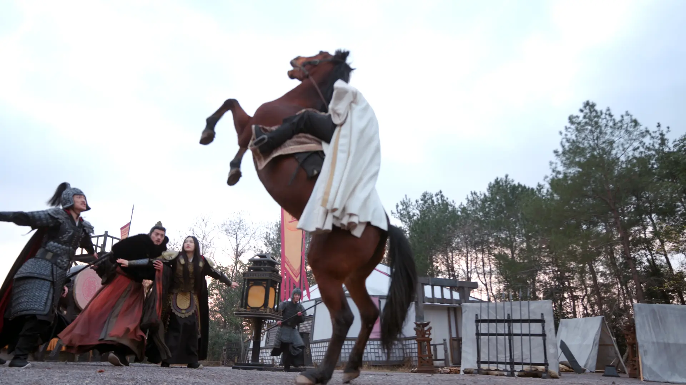
03-章节缩略图与图片/chapter6_neutral/node_thumbnails/a06_a007_a002loop.webp03-章节缩略图与图片/chapter6_neutral/node_thumbnails/a06_a012_a003loop.webp03-章节缩略图与图片/chapter6_neutral/node_thumbnails/a06_a016_a004loop.webp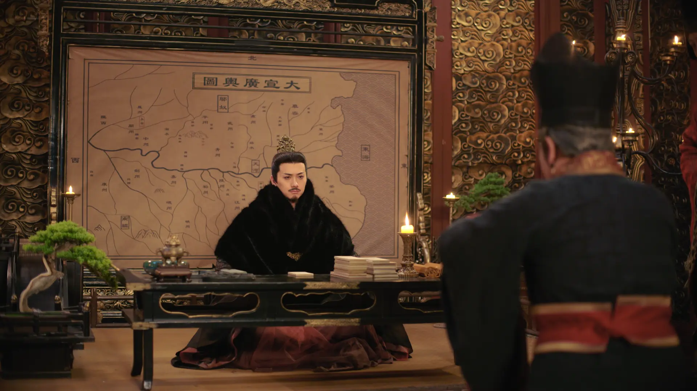
03-章节缩略图与图片/chapter6_neutral/node_thumbnails/a06_a020_a005loop.webp03-章节缩略图与图片/chapter6_neutral/node_thumbnails/a06_a024_a006loop.webp03-章节缩略图与图片/chapter6_neutral/node_thumbnails/a06_a031_a007loop.webp03-章节缩略图与图片/chapter6_neutral/node_thumbnails/a06_a032_a007a_abe001.webp03-章节缩略图与图片/chapter6_neutral/node_thumbnails/a06_a033_a007b_abe002.webp03-章节缩略图与图片/chapter6_neutral/node_thumbnails/a06_a035_a050051052.webp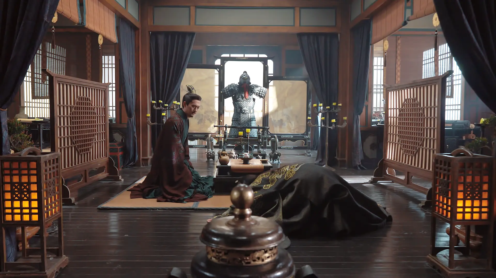
03-章节缩略图与图片/chapter6_neutral/node_thumbnails/a06_a039_a008loop.webp03-章节缩略图与图片/chapter6_neutral/node_thumbnails/a06_a042_a009loop.webp03-章节缩略图与图片/chapter6_neutral/node_thumbnails/a06_a046_a010loop.webp03-章节缩略图与图片/chapter6_neutral/node_thumbnails/a06_a050_a011loop.webp03-章节缩略图与图片/chapter6_neutral/node_thumbnails/a06_a054_a012loop.webp03-章节缩略图与图片/chapter6_neutral/node_thumbnails/a06_a059_a013loop.webp03-章节缩略图与图片/chapter6_neutral/node_thumbnails/a06_a063_a014loop.webp03-章节缩略图与图片/chapter6_neutral/node_thumbnails/a06_a067_a015loop.webp03-章节缩略图与图片/chapter6_neutral/node_thumbnails/a06_a074_a016loop.webp03-章节缩略图与图片/chapter6_neutral/node_thumbnails/a06_a075_a016a.webp03-章节缩略图与图片/chapter6_neutral/node_thumbnails/a06_a076_a016b.webp03-章节缩略图与图片/chapter6_neutral/node_thumbnails/a06_a078_a017loop.webp03-章节缩略图与图片/chapter6_neutral/node_thumbnails/a06_a079_a017a.webp03-章节缩略图与图片/chapter6_neutral/node_thumbnails/a06_a080_a017b048.webp03-章节缩略图与图片/chapter6_neutral/node_thumbnails/a06_a081_a049.webp03-章节缩略图与图片/chapter6_neutral/node_thumbnails/a06_a082_a053054.webp03-章节缩略图与图片/chapter6_neutral/node_thumbnails/a06_a083_a055_abe003.webp03-章节缩略图与图片/chapter6_neutral/node_thumbnails/a06_a085_a018loop.webp03-章节缩略图与图片/chapter6_neutral/node_thumbnails/a06_a086_a018a_abe004.webp03-章节缩略图与图片/chapter6_neutral/node_thumbnails/a06_a087_a018b057058059060.webp03-章节缩略图与图片/chapter7_neutral/images/上.webp03-章节缩略图与图片/chapter7_neutral/images/下.webp03-章节缩略图与图片/chapter7_neutral/images/完.webp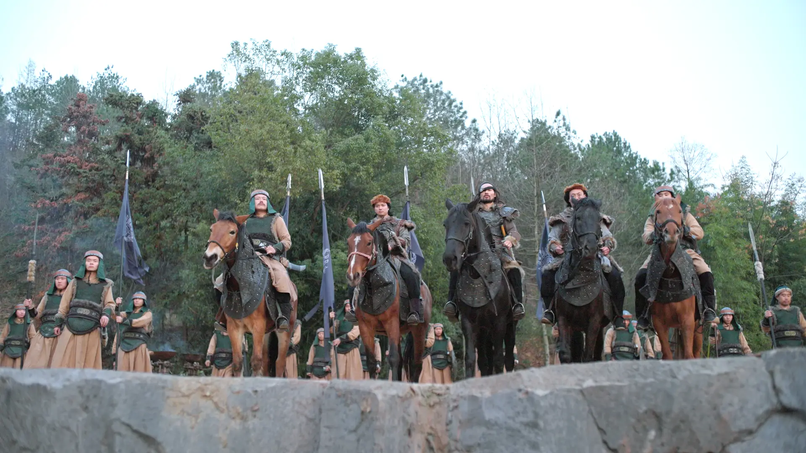
03-章节缩略图与图片/chapter7_neutral/node_thumbnails/a07_a001_a001002003.webp03-章节缩略图与图片/chapter7_neutral/node_thumbnails/a07_a003_a001loop.webp03-章节缩略图与图片/chapter7_neutral/node_thumbnails/a07_a006_a005006007_abe001.webp03-章节缩略图与图片/chapter7_neutral/node_thumbnails/a07_a007_a008009010_a010_a1_abe002.webp03-章节缩略图与图片/chapter7_neutral/node_thumbnails/a07_a009_a002loop.webp03-章节缩略图与图片/chapter7_neutral/node_thumbnails/a07_a012_a012013014_abe003.webp03-章节缩略图与图片/chapter7_neutral/node_thumbnails/a07_a016_a030031.webp03-章节缩略图与图片/chapter7_neutral/node_thumbnails/a07_a017_aqte1loop.webp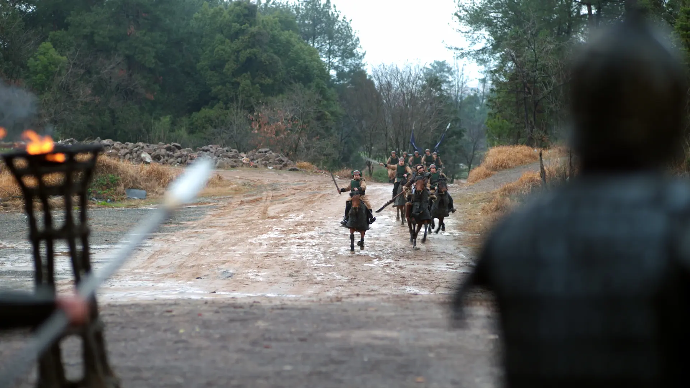
03-章节缩略图与图片/chapter7_neutral/node_thumbnails/a07_a020_a003loop.webp03-章节缩略图与图片/chapter7_neutral/node_thumbnails/a07_a023_a008loop.webp03-章节缩略图与图片/chapter7_neutral/node_thumbnails/a07_a024_a008a.webp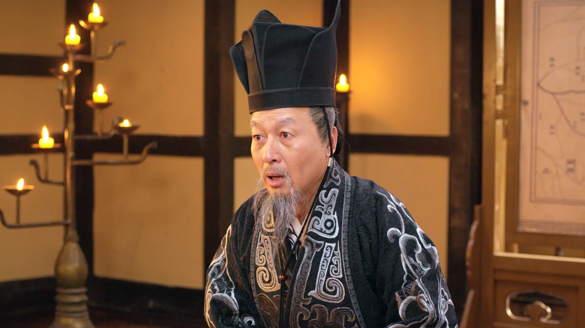
03-章节缩略图与图片/chapter7_neutral/node_thumbnails/a07_a025_a004loop.webp03-章节缩略图与图片/chapter7_neutral/node_thumbnails/a07_a029_a005loop.webp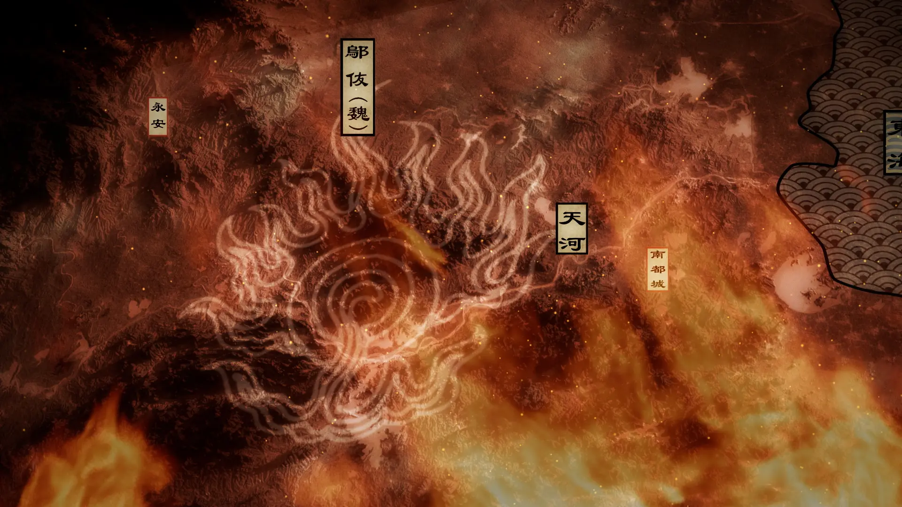
03-章节缩略图与图片/chapter7_neutral/node_thumbnails/a07_a034_a008bbe005.webp03-章节缩略图与图片/chapter7_neutral/node_thumbnails/a07_a038_a006loop.webp03-章节缩略图与图片/chapter7_neutral/node_thumbnails/a07_a043_a007loop.webp03-章节缩略图与图片/chapter7_neutral/node_thumbnails/a07_a049_a009loop.webp03-章节缩略图与图片/chapter7_neutral/node_thumbnails/a07_a050_a066067068.webp03-章节缩略图与图片/chapter7_neutral/node_thumbnails/a07_a053_a071072073074.webp03-章节缩略图与图片/chapter7_neutral/node_thumbnails/a07_a054_a075075_a1075_a2075_a3075_a4075_a5075_a6.webp03-章节缩略图与图片/chapter7_neutral/node_thumbnails/a07_a055_a076077.webp03-章节缩略图与图片/chapter7_neutral/node_thumbnails/a07_a056_a010loop.webp03-章节缩略图与图片/chapter7_neutral/node_thumbnails/a07_a056_a078079080081.webp03-章节缩略图与图片/chapter7_neutral/node_thumbnails/a07_a057_a082083084085.webp03-章节缩略图与图片/chapter7_neutral/node_thumbnails/a07_a060_a050.webp03-章节缩略图与图片/chapter7_neutral/node_thumbnails/a07_a061_a011loop.webp03-章节缩略图与图片/chapter7_neutral/node_thumbnails/a07_a064_a051.webp03-章节缩略图与图片/chapter7_neutral/node_thumbnails/a07_a065_a012loop.webp03-章节缩略图与图片/chapter7_neutral/node_thumbnails/a07_a068_a052.webp01-人物图片/carousel/刘大刀.png01-人物图片/carousel/刘念.png01-人物图片/carousel/司空旭.png01-人物图片/carousel/司空景.png01-人物图片/carousel/司空正.png01-人物图片/carousel/司空盛.png01-人物图片/carousel/司空耀.png01-人物图片/carousel/司空钰.png01-人物图片/carousel/慕容崔.png01-人物图片/carousel/曹表之.png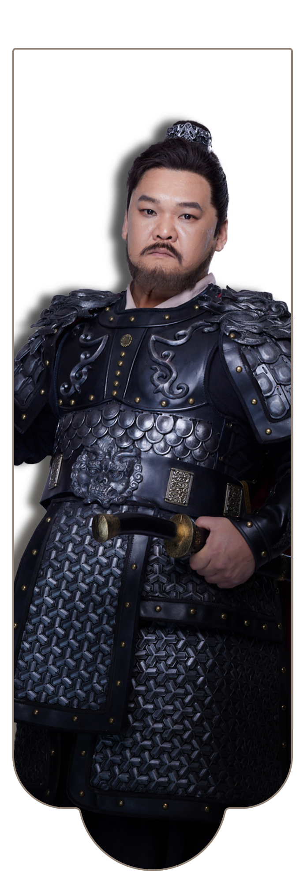
01-人物图片/carousel/朱元之.png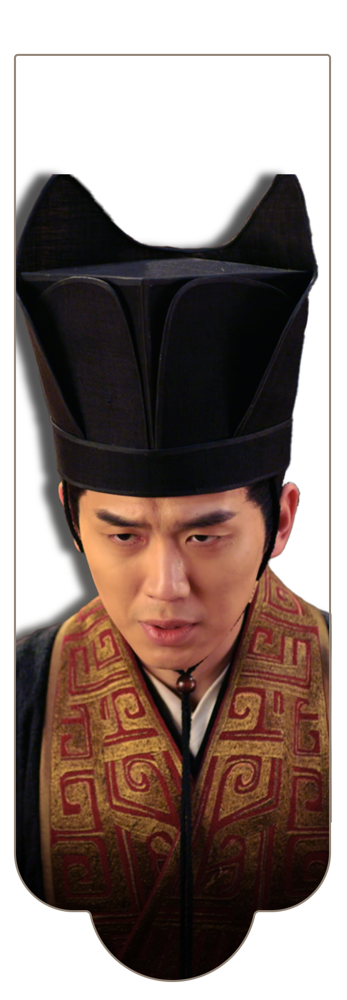
01-人物图片/carousel/李定远.png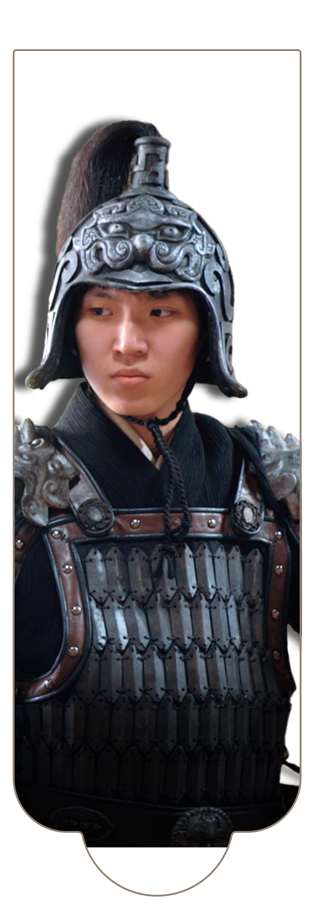
01-人物图片/carousel/林戍.png01-人物图片/carousel/柳才人.png01-人物图片/carousel/楚桓.png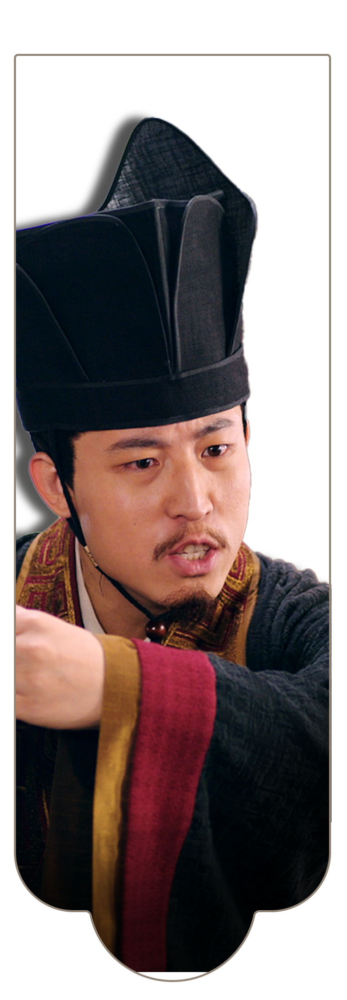
01-人物图片/carousel/楚茂伦.png01-人物图片/carousel/楚蒙.png01-人物图片/carousel/王寡妇.png01-人物图片/carousel/王明.png01-人物图片/carousel/皇后李氏.png01-人物图片/carousel/石狼.png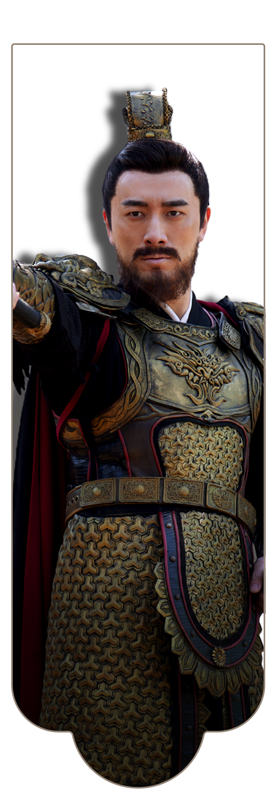
01-人物图片/carousel/祖坤.png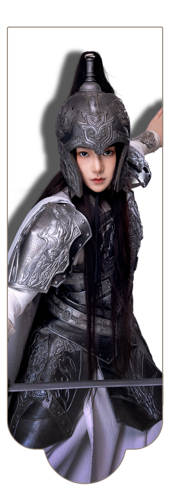
01-人物图片/carousel/祖月.png01-人物图片/carousel/福江.png01-人物图片/carousel/虞宫.png01-人物图片/carousel/谢建安.png01-人物图片/carousel/谢玄.png01-人物图片/carousel/谢若兰.png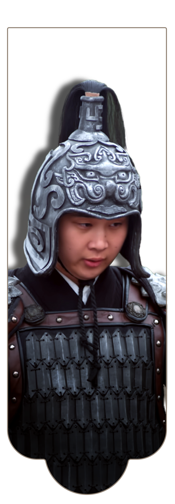
01-人物图片/carousel/赵武.png01-人物图片/carousel/邱胜.png01-人物图片/carousel/陈婉儿.png01-人物图片/carousel/陈导.png01-人物图片/carousel/陈应.png01-人物图片/carousel/齐九.png01-人物图片/portrait/刘大刀.png01-人物图片/portrait/刘念.png01-人物图片/portrait/司空旭.png01-人物图片/portrait/司空景.png01-人物图片/portrait/司空正.png01-人物图片/portrait/司空盛.png01-人物图片/portrait/司空耀.png01-人物图片/portrait/司空钰.png01-人物图片/portrait/慕容崔.png01-人物图片/portrait/曹表之.png01-人物图片/portrait/朱元之.png01-人物图片/portrait/李定远.png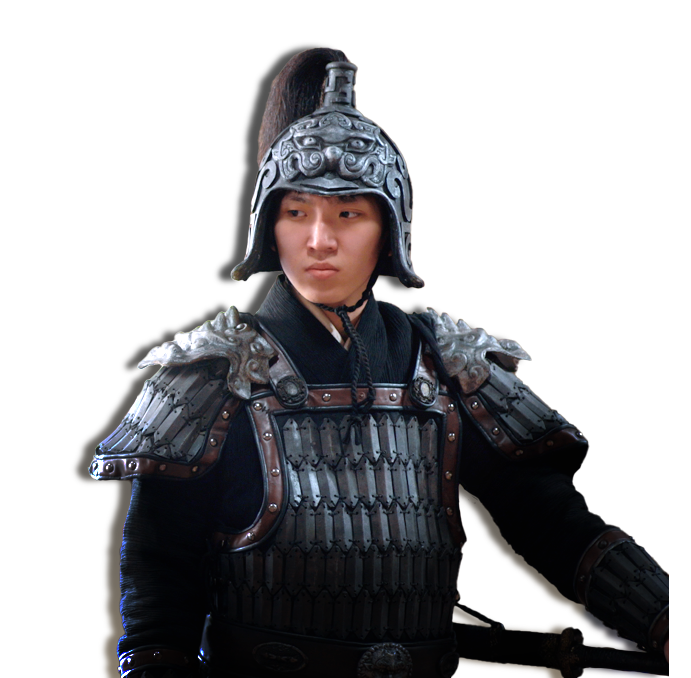
01-人物图片/portrait/林戍.png01-人物图片/portrait/柳才人.png01-人物图片/portrait/楚桓.png01-人物图片/portrait/楚茂伦.png01-人物图片/portrait/楚蒙.png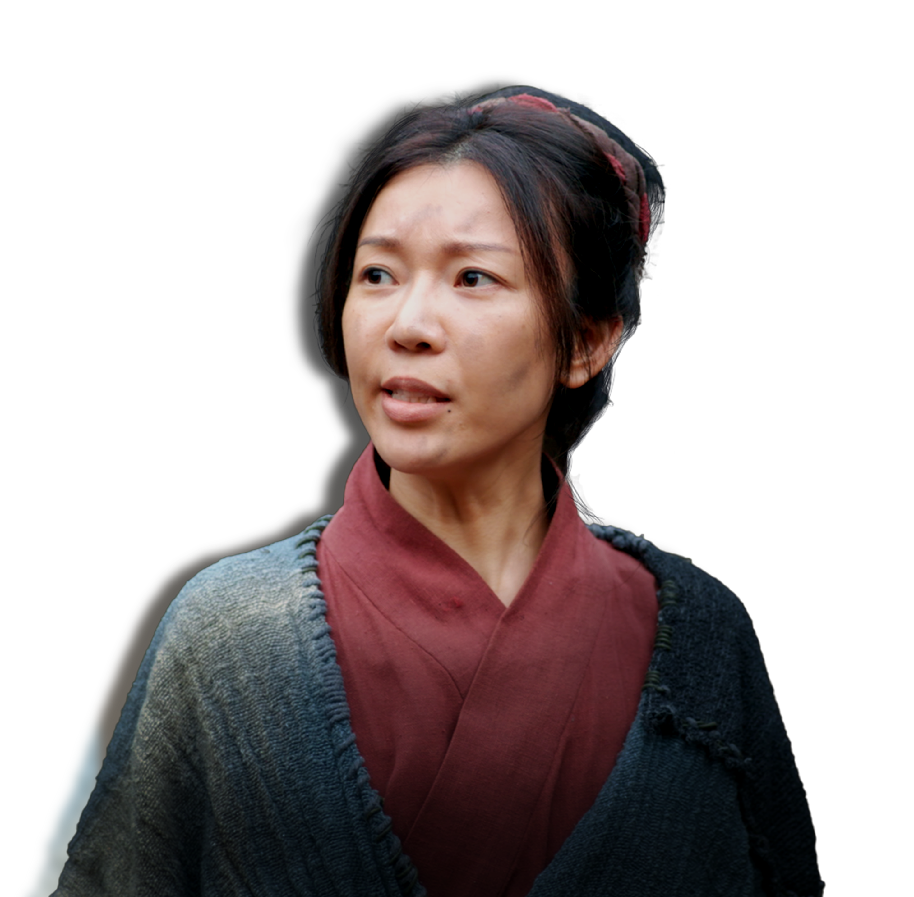
01-人物图片/portrait/王寡妇.png01-人物图片/portrait/王明.png01-人物图片/portrait/皇后李氏.png01-人物图片/portrait/石狼.png01-人物图片/portrait/祖坤.png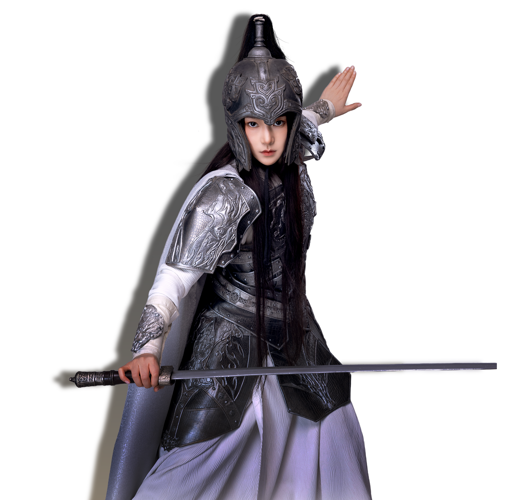
01-人物图片/portrait/祖月.png01-人物图片/portrait/福江.png01-人物图片/portrait/虞宫.png01-人物图片/portrait/谢建安.png01-人物图片/portrait/谢玄.png01-人物图片/portrait/谢若兰.png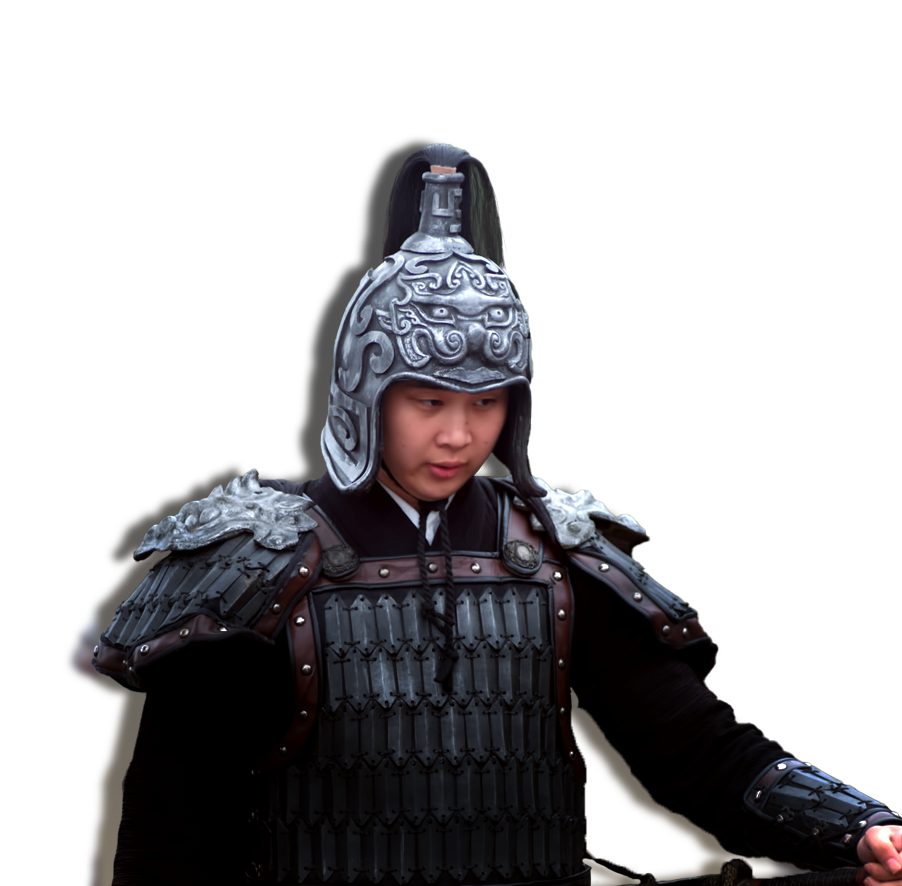
01-人物图片/portrait/赵武.png01-人物图片/portrait/邱胜.png01-人物图片/portrait/陈婉儿.png01-人物图片/portrait/陈导.png01-人物图片/portrait/陈应.png01-人物图片/portrait/齐九.png